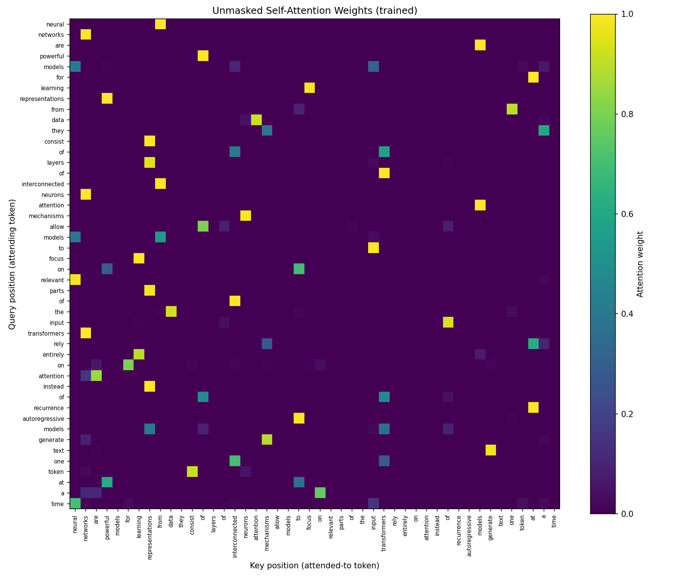
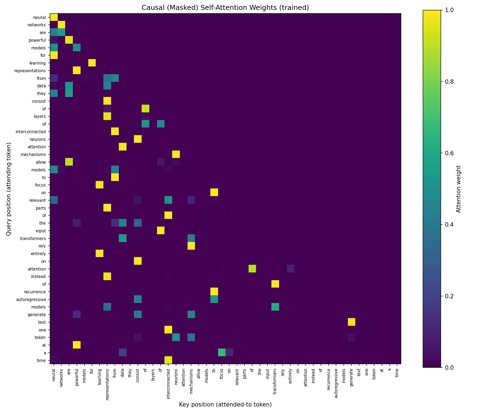
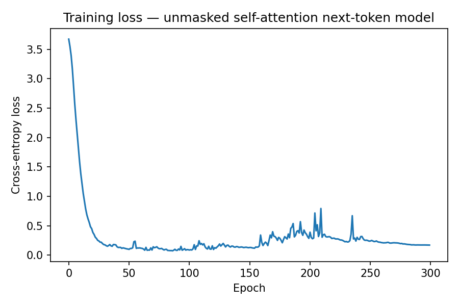
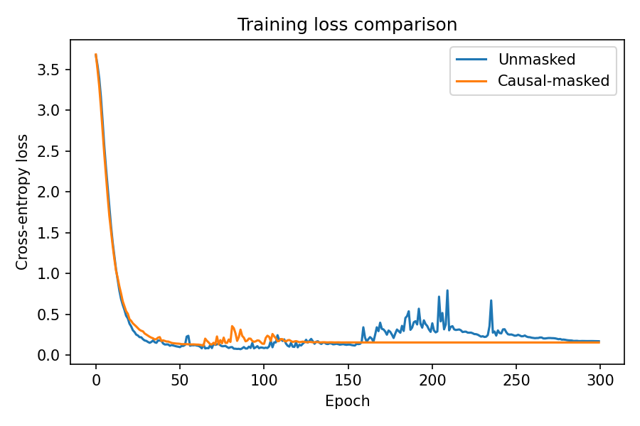

I tried six prompt engineering techniques - Zero-Shot, Few-Shot, Chain-of-Thought (CoT),
Zero-Shot CoT, Meta-Prompting, and Tree of Thoughts (ToT) - in LangChain, with two examples of my
own for each one (a train speed word problem, and a syllogism-style logic question). Everything
runs against a locally hosted llama3.2 model through langchain-ollama,
since I didn't have an Anthropic API key available in this environment. The assignment wanted real
code calling prompts rather than chat screenshots, so this fits that either way. All the prompts,
raw responses, and code are in hw3_part_a_prompt_engineering.ipynb.
| Technique | Example 1 (avg speed; correct = 52.5 mph) | Example 2 (syllogism; correct = "Cannot be determined") | Correct? |
|---|---|---|---|
| Zero-Shot | 90 (wrong) | No | ✗ / ~✓ |
| Few-Shot | 52.5 | Cannot be determined | ✓ / ✓ |
| Chain-of-Thought | 52.5 | Cannot be determined | ✓ / ✓ |
| Zero-Shot CoT | 52.5 | "Maria must be an engineer" (wrong) | ✓ / ✗ |
| Meta-Prompting | 52.5 | No, not necessarily an engineer | ✓ / ✓ |
| Tree of Thoughts | 52.5 | Not necessarily an engineer | ✓ / ✓ |
Zero-Shot just got the math wrong - it answered "90" with no work shown, so there's no way to know where that came from. Its "No" on the logic question was basically right, though, even without any help. Few-Shot fixed the math right away and gave the clean "Cannot be determined" answer on the logic question too - even though the examples I gave it didn't show any reasoning, just problem-and-answer pairs, it still seemed to shift into a more careful mode. Chain-of-Thought (few-shot, but with the reasoning shown in the examples) also got both right, and its answers followed my examples' structure the most closely out of all six.
Zero-Shot CoT ("let's think step by step") is the interesting failure here: it got the math right, but walked itself straight into the classic affirming-the-consequent mistake on the logic question, concluding "Maria must be an engineer." It laid out clean, confident-sounding steps the whole way there - which is really the point: telling a model to think step by step doesn't guarantee the steps are actually valid, just that they sound like reasoning. Meta-Prompting was the only technique that explicitly called out the fallacy by name ("Affirming the Consequent error") before answering, and it got both questions right, though its answers were the longest of the bunch. Tree of Thoughts (three branches - one direct, one skeptical, one hunting for counterexamples - plus a judge call) also got both right, and it was the only technique where the branches actually disagreed with each other before getting resolved: one branch's shaky argument got overridden by the other two, which came up with real counterexamples, and the judge went with the stronger reasoning instead of just picking whatever sounded most confident.
Overall: the two mistakes I saw - zero-shot's wrong math and zero-shot-CoT's bad logic - both happened on the techniques that don't give the model anything to check itself against. Every technique that added a worked example, a named strategy, or multiple attempts plus a judge got both questions right. So it looks like having some kind of check built in matters more than which specific technique you pick - but just telling the model to reason step by step, on its own, doesn't guarantee the reasoning will actually hold up.
I built a single-head scaled dot-product self-attention layer completely from scratch in
PyTorch (Vaswani et al., 2017, Section 3.2) - just nn.Embedding,
nn.Linear, matrix multiplication, softmax, and cross-entropy loss, no
nn.MultiheadAttention or nn.Transformer. It runs on the assignment's
fixed 5-sentence text (46 word-level tokens, 39 unique words - punctuation is dropped rather than
kept as its own token). I trained the token/position
embeddings and the Q/K/V projections together for 300 epochs (Adam, lr=1e-2), first with no
masking at all (Part 1), then again from scratch with a lower-triangular causal mask applied at
every step (Part 2).

The trained attention matrix here is clearly not just noise - it's sparse and high-contrast instead of flat gray, which tells me the Q/K/V weights actually picked up real relationships between tokens during training, rather than sitting at their random starting values. You can see bright spots where specific tokens get a lot of attention from many different queries, instead of attention being spread evenly across all 46 tokens.

With the causal mask applied the whole way through training, the heatmap comes out strictly
lower-triangular - everything above the diagonal is exactly zero. I checked this two ways: visually
in the plot, and with a check in the notebook confirming the attention mass on future positions is
under 1e-6. This is exactly what you want to see - proof that no token is looking
ahead at something that hasn't "happened" yet, which is the whole point of causal masking.


One thing that surprised me: the causal-masked model actually ends up with a lower and much more stable training loss than the unmasked model, not a higher or noisier one. The masked curve flattens out smoothly around 0.15 and stays there; the unmasked curve gets noticeably noisier later in training, with several visible spikes after epoch 150, ending up around 0.17. I expected the opposite going in, since the masked model has strictly less information to work with at each position. My best guess: with such a tiny dataset (only 46 tokens), the unmasked model can take a shortcut by peeking at future tokens that happen to line up with the answer, and chasing that shortcut seems to make its training less stable rather than more - it keeps finding slightly different ways to exploit that extra context as training goes on. The causal model doesn't have that option, so once it finds a good left-to-right representation there's less for it to keep readjusting. That said, this is a small enough setup that I wouldn't generalize this pattern beyond this specific run - it's easily a quirk of this tiny dataset rather than a general property of masked vs. unmasked attention.
See AI_USE.md for the full appendix. Short version: I originally wrote the
discussion/findings sections of both notebooks before actually running the code, and that produced
two real mistakes - I claimed the Tree-of-Thoughts branches disagreed with each other, when the
first version actually produced three identical branches (turned out Ollama's seeding made repeat
calls fully deterministic), and I predicted causal masking would raise the training loss, when the
real curves showed the opposite for most of training. I caught both by actually running the
notebooks end-to-end and reading the real outputs and plots, then fixed the code (giving each ToT
branch its own persona so they'd genuinely differ) and rewrote the findings to match what actually
happened instead of what I assumed would happen. Separately, an earlier draft of this report also
stated the wrong token/vocabulary counts (47 tokens, 39 words) because the tokenizer at the time
kept punctuation marks as their own tokens, which the notebook's actual output contradicted (51
tokens, 40 vocabulary items with punctuation kept). Since the assignment specifically asks for
word-level tokenization, the tokenizer was changed to drop punctuation entirely, and Part B was
rerun - the correct, verified numbers are 46 tokens and 39 unique words, which is what's reported
throughout this document now.